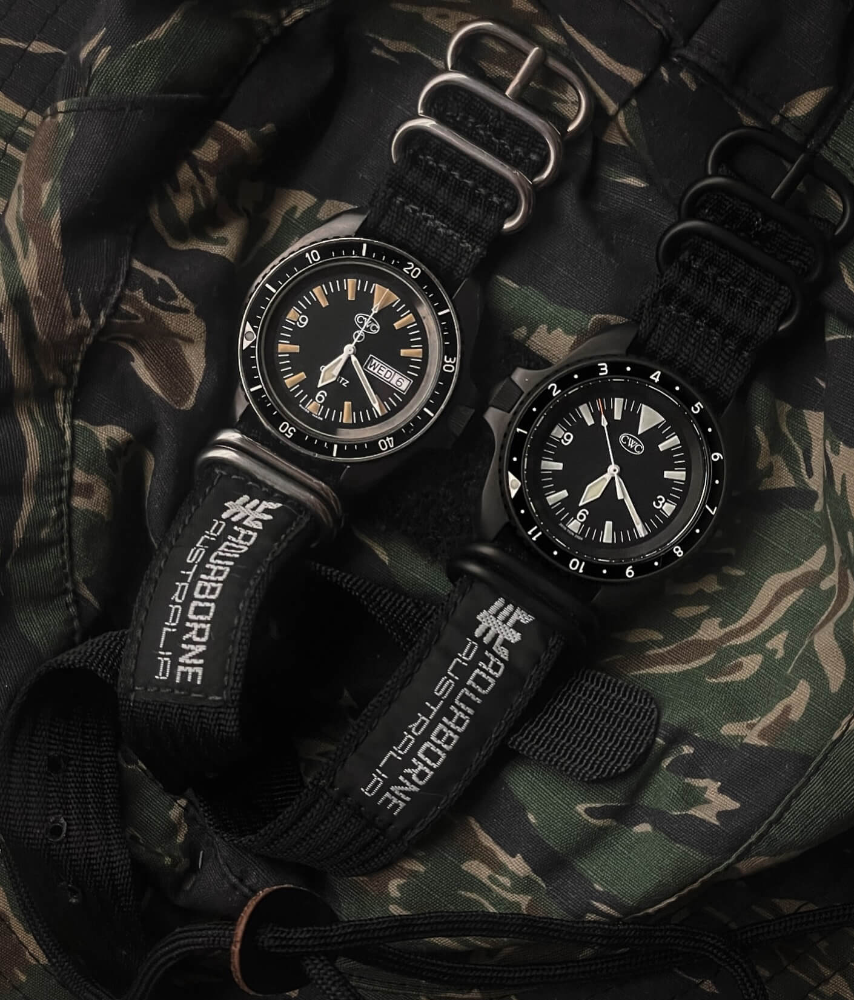
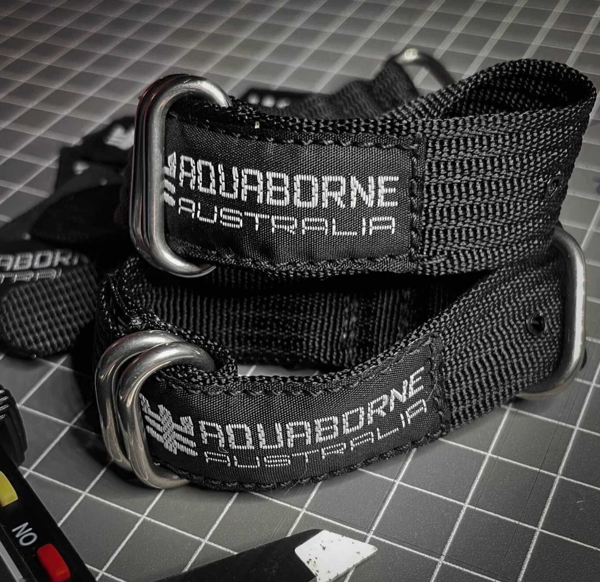
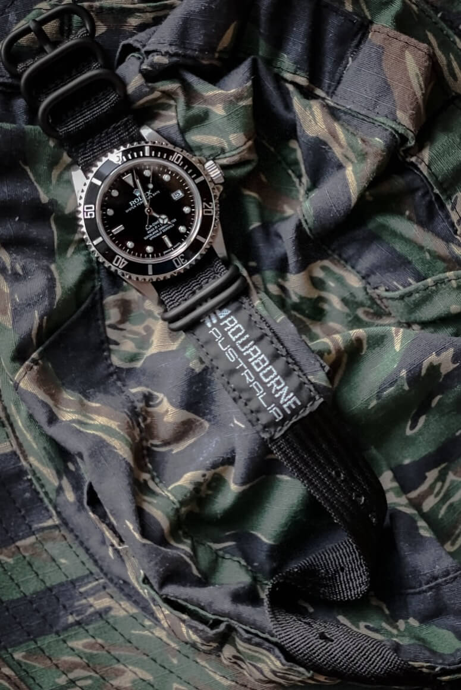

FrogSquadStraps Releases the Aquaborne Strap as a Nod to History
FrogSquadStraps has released the Aquaborne strap, a new product inspired by a historic military design. This strap is a recreation of the Waterborne straps, which were very popular in Australia. If you are a fan of robust, tough, and functional watch wear, then this is one you will want to know about.
 Nenad Pantelic • May 14, 2025
Nenad Pantelic • May 14, 2025

Waterborne straps earned a loyal following for their no-nonsense utility and resilience, becoming something of a cult classic. The primary users of Waterborne straps included divers, search and rescue (SAR) personnel, and police divers.
These straps were mostly used during the 1980s and through the 1990s, but unfortunately Waterborne Australia, closed operations around 2007 after shifted production from Australia to Taiwan in the early 2000s.
Today, original Waterborne have become sought-after vintage straps, similar to Phoenix ones issued to the British MOD.
I had seen them around on WUS and /r/Watches here and there. I didn't really pay them much attention before, but I got interested when Luke, founder and owner of FrogSquadStraps, mentioned his new Aquaborne straps.
There is an awesome Reddit post where you can see a ton of old Waterborne straps on vintage divers (alert, some grail watches in those pics!).
FrogSquadStraps Aquaborne: The Specs
Luke has clearly done his homework. He captured the essence of the original design, but leaned onto the modern, durable materials. Here are the details for the new Aquaborne strap:
| Type | Nylon blended pull-through strap |
| Construction | Hand and machine made |
| Material | Thin, soft, and durable nylon |
| Lug Widths | 20mm, 22mm, 24mm |
| Hardware Options | Polished or matte black |
| Buckle | Signed Brushed 316L Steel |
| Colors | Currently available in black |
These pass-through straps come with a price tag of $78.00.
Head to FrogSquadStraps to check out the build options and see if this revived classic is the one for you.


Keeping the Stories Alive
It is awesome when smaller enthusiast-driven brands find forgotten designs, give them a modern twist, and keep the stories alive.
While larger companies might understandably focus on broader appeal, these dedicated brands often have the agility and passion required to explore niche products, and bring them to a contemporary audience. That is something I always appreciate.
Curious about the Aquaborne? Check it out on the FrogSquadStraps website and get yourself a product with a historic military design.